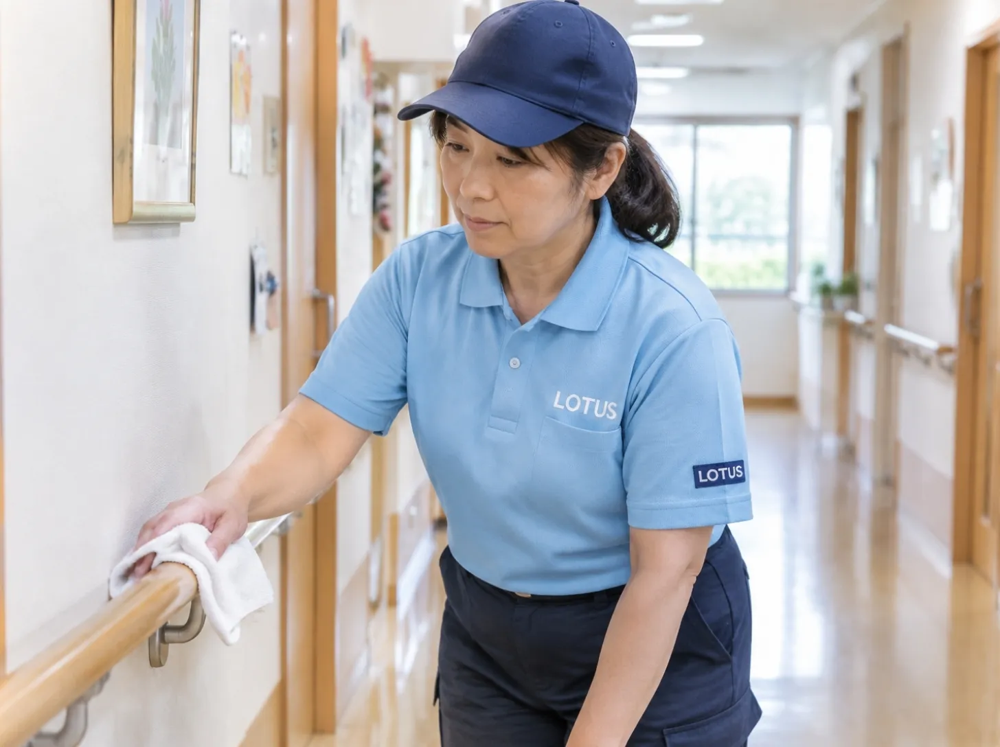

CLEAN CARE JOURNAL / 暮らしから考える清掃
家族が知りたいのは、床の光沢だけではない。

清掃の報告を、暮らしの安心につなぐ
久しぶりの面会で家族が見るのは、床や窓だけではありません。いつもの椅子で過ごせているか。大切にしていた物が手元にあるか。部屋の変化を本人がどう受け止めたか。見た目がきれいでも、聞きたいことが残る場合があります。
一方で、家族への連絡をその都度増やせば、職員の仕事も増えます。毎回長い報告を作るのではなく、施設が普段使っている連絡方法に、必要な変更だけを短く乗せる。そんな仕組みから考えられます。
参考になる実例。ただし当時の条件は分ける
日本老年看護学会のコロナ禍のケアQ&Aには、生活習慣を家族から聞き取ることや、連絡方法・頻度を伝える工夫が掲載されています。感染流行期の資料であり、当時の面会制限や検査を今の全施設に適用する意味ではありません。学会の実践例
この例から清掃に応用するなら、作業した面積だけでなく、生活に影響した変更を知らせる方法です。「今日は終わりました」で止めず、どこが使えるようになり、どこは確認待ちなのかを施設職員が説明できる状態にします。
伝えること、伝えすぎないこと
以下は連絡項目の案です。作業場所、使えるようになる時刻、移動した物、まだ残る課題。この四つを一枚にまとめ、担当職員が必要な相手へ伝えます。本人の反応や体調などの情報は、清掃会社が独自に家族へ配信するものではありません。本人の意向と施設の共有ルールを確認します。
写真も、多ければ安心につながるとは限りません。居室には、生活歴や身体の状態が分かる物が写り込みます。個人情報保護委員会は、医療・介護施設で利用者を識別できる写真を掲載・展示する場合の同意について説明しています。写真の取扱いQ&A 営業用の施工写真に転用することは、家族向けの連絡とは別に考える必要があります。
今日の持ち帰り
「見てください」と写真を増やす前に、「何が分かれば安心できそうか」を本人と家族に確認する。本人と家族の希望が違う場合も、本人を抜きに決めず、施設の担当者が整理する。その会話を支える短い報告が、清掃の終わりにあるとよいと考えます。
一律の追加報告を職員へ求めるのではなく、今ある申し送りで足りるかを先に相談しましょう。清掃のために、暮らしを支える時間が削られない形を目指します。